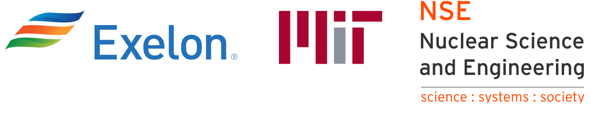

Welcome to NEORL Website!
Primary contact to report bugs/issues: Majdi I. Radaideh (radaideh@umich.edu)
NEORL (NeuroEvolution Optimisation with Reinforcement Learning) is a set of implementations of hybrid algorithms combining neural networks and evolutionary computation based on a wide range of machine learning and evolutionary intelligence architectures. NEORL aims to solve large-scale optimization problems relevant to operation & optimisation research, engineering, business, and other disciplines.
Github repository: https://github.com/mradaideh/neorl
NEORL paper: https://arxiv.org/abs/2112.07057
Copyright
{kind=link}

This repository and its content are copyright of Exelon Corporation © in collaboration with MIT Nuclear Science and Engineering 2021. All rights reserved.
You can read the first successful application of NEORL for nuclear fuel optimisation in this News Article.
User Guide
- General Guide
- Algorithms
- Hyperparameter Tuning
- Examples
- 1. Example 1: Traveling Salesman Problem
- 2. Example 2: Ackley with EA
- 3. Example 3: Welded-beam design
- 4. Example 4: Benchmarks
- 5. Example 5: CEC’2017 Test Suite
- 6. Example 6: Three-bar Truss Design
- 7. Example 7: Pressure Vessel Design
- 8. Example 8: Pressure Vessel Design with Demonstration of Categorical Parameter
- 9. Example 9: Cantilever Stepped Beam
- 10. Example 10: Knapsack Problem
- 11. Example 11: Microreactor Control with Malfunction
Projects/Papers Using NEORL
1- Radaideh, M. I., Wolverton, I., Joseph, J., Tusar, J. J., Otgonbaatar, U., Roy, N., Forget, B., Shirvan, K. (2021). Physics-informed reinforcement learning optimization of nuclear assembly design. Nuclear Engineering and Design, 372, p. 110966 [LINK1].
2- Radaideh, M. I., Shirvan, K. (2021). Rule-based reinforcement learning methodology to inform evolutionary algorithms for constrained optimization of engineering applications. Knowledge-Based Systems, 217, p. 106836 [LINK2].
3- Radaideh, M. I., Forget, B., Shirvan, K. (2021). Large-scale design optimisation of boiling water reactor bundles with neuroevolution. Annals of Nuclear Energy, 160, 108355 [LINK3].
Citing the Project
To cite this repository in publications:
@article{radaideh2021neorl,
title={NEORL: NeuroEvolution Optimization with Reinforcement Learning},
author={Radaideh, Majdi I and Du, Katelin and Seurin, Paul and Seyler, Devin and Gu, Xubo and Wang, Haijia and Shirvan, Koroush},
journal={arXiv preprint arXiv:2112.07057},
year={2021}
}
Acknowledgments
NEORL was established in MIT back to 2020 with feedback, validation, and usage of different colleagues: Issac Wolverton (MIT Quest for Intelligence), Joshua Joseph (MIT Quest for Intelligence), Benoit Forget (MIT Nuclear Science and Engineering), Ugi Otgonbaatar (Exelon Corporation).